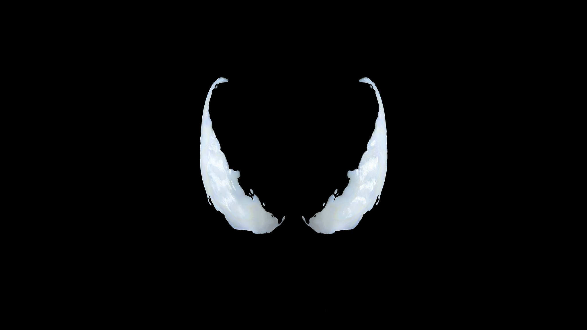
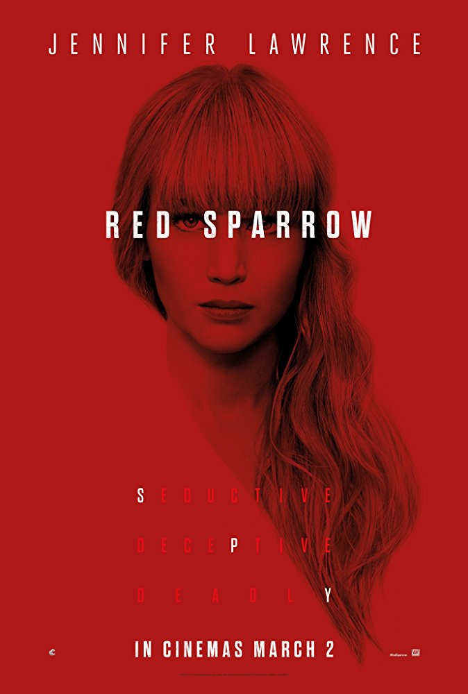

Hero — auto-animating, horizontal
Registered on branch hero. Auto-advances every 4.2s via a Cyre interval-scheduled animate channel.





Wall — vertical orientation
Registered on branch wall, orientation: 1. This is the exact layout that exposed a
carousel.height sizing bug in event-manager.ts — vertical carousels were
collapsing to a single item's height instead of the full multi-item viewport. Fixed as part of this pass.


Lab — manual only, mouse-wheel enabled
Registered on branch lab with wheel: 1. No auto-animate channel scheduled — every slide change is a direct dispatch (button, or scroll with your cursor over the frame), so the console log line always traces back to something you just did. This is also the fixed wheeler channel — it used to call its handler function directly, bypassing Cyre entirely, so Holo.on(id, 'wheeler', …) could never see a scroll. It now dispatches through the branch like every other action.



FAQ — Accordion, same branch structure
A second component family built the same way as Holo: Accordion.BUILD(el, opts) mints its own
cyre.branch(id), with local channels toggle/open/close
living on that branch instead of the root. Set to single-open mode, so opening one panel closes the rest.
Cyre channels are global by string id. Two carousels both registering next-slide on the root instance would silently overwrite each other's config — cyre.branch(id) rewrites the local name to something like hero/next-slide, so instances can reuse identical channel names without colliding.
Every click calls branch.call('toggle', {index}) on this accordion's own branch — the same dispatch-through-Cyre pattern as Holo's next/prev. Watch the console: opening a panel logs a real toggle event with this accordion's id.
State lives in accordionStore (in core/accordion-state.ts), not in a closure inside the component — the same "no local maps, state comes from the state directory" rule Holo follows. The DOM is just a render of whatever that store currently holds.
Multiply — spawn more branches at runtime
Each click calls Holo.BUILD(el) on a freshly created <carousel> element, which
mints a brand new cyre.branch(id). This is the collision test: every spawned unit reuses
the identical local channel names as Hero/Wall/Lab, and none of them interfere with each other.